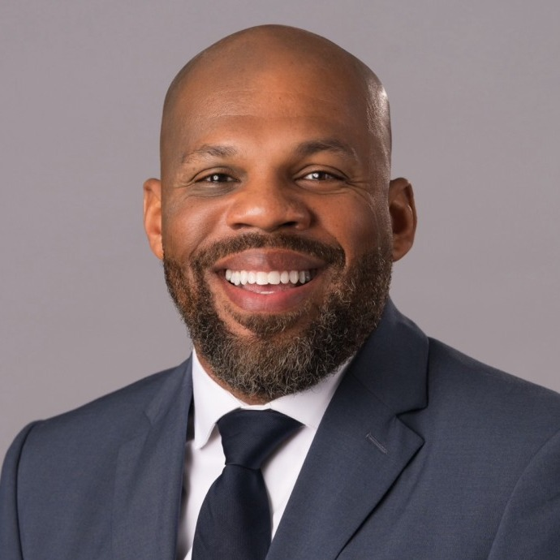

Garry Crum
Commander
U.S. Marine Corps · Rhode Island Air National Guard · Iraq
Post member since 2023
Garry Crum is an Iraq War veteran who served in the Marine Corps and then the Rhode Island Air National Guard. A Cranston resident of more than 30 years, he has known this hall since his middle school days. He became Commander when the Post was about a week from closing, called an emergency meeting and wrote to former members to keep the doors open. Since then he has led the repairs to the hall and the rebuilding of the membership, which finished 2025–26 above 100 percent.